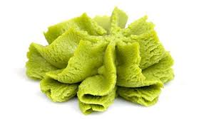

Wasabi is a Japanese plant with a thick grren root that tastes like a strong horseradish and is used in cooking, especially in powder or paste form as an accompaniment to raw fish(sushi).
Real wasabi is very expensive, therefore the wasasbi you usually eat is just horseradish along with these ingredients:
Return to the main page.